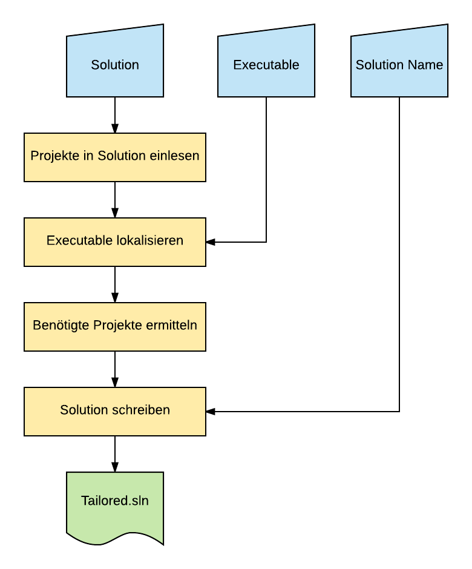
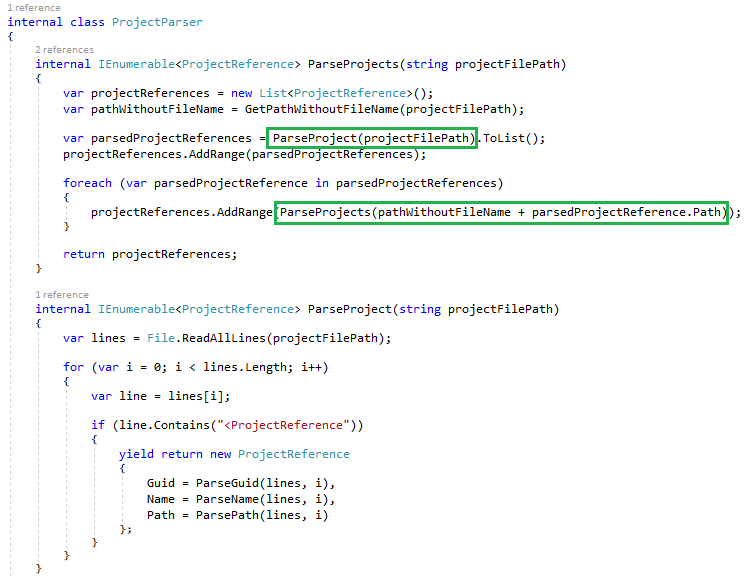
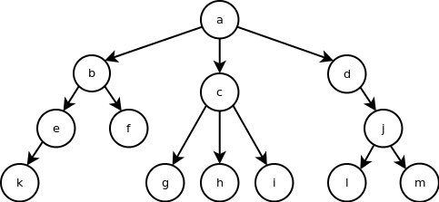

Solution Wizard
Claudio Bernasconi
8. Dezember 2017Agenda
- Problemstellung & Idee
- Lösung & Challenges
- Fazit
Problemstellung & Idee
Problemstellung
- Programmänderungen innerhalb von grossen Solutions benötigen zu viel Zeit
- Funnel funktioniert in Visual Studio 2017 nicht
Idee
On-Demand Erstellung einer Solution,
welche die gwünschten Projekte enthält.
Lösung & Challenges
Prozess
Projekte ermitteln
Gut, aber...
... langsam!
Erstellung St1dial aus Nest.Client.sln dauert >15 Minuten
Warum?
Für jedes Projekt wird rekursiv jede Projektreferenz analyisiert
Bei 150 Projekten mit jeweils 20 Referenzen sind dies insgesamt ??? Knoten
Heuristik
- Jedes Projekt nur einmal analyisieren
- Maximal so viele Analyseschritte, wie es Projekte in der Solution gibt
Ergebnis

Erstellung St1dial aus Nest.Client.sln dauert <100 ms
Fazit
Wenig Aufwand...
... grosser Ertrag.
Gute Tools für den Alltag zahlen sich aus.
Komplexität reduzieren
Vermeitlich schwierige Problemstellungen lassen sich mit dem richtigen Blickwinkel vereinfachen
Rekursion vs. Heuristik
Mit der richtigen Heuristik lassen sich vermeintlich komplexe Rekursionen vereinfachen
First-Try Codequalität
Auch vermeintlicher Wegwerfcode kann im ersten Versuch sauber geschrieben werden, wenn wenige grundlegende Empfehlungen befolgt werden
Die Konsole
Konsolenanwendungen können sehr schnell geschrieben werden und erledigen einen Task auch heute noch sehr effizient